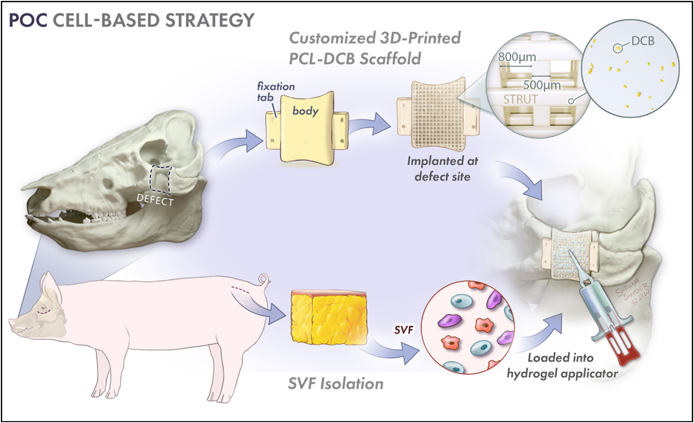
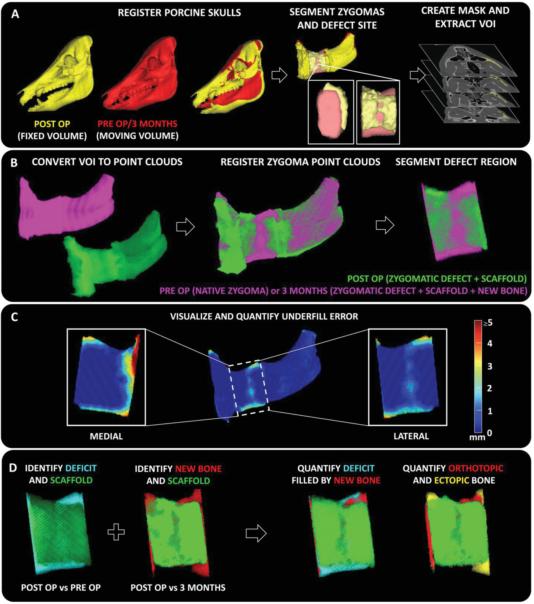
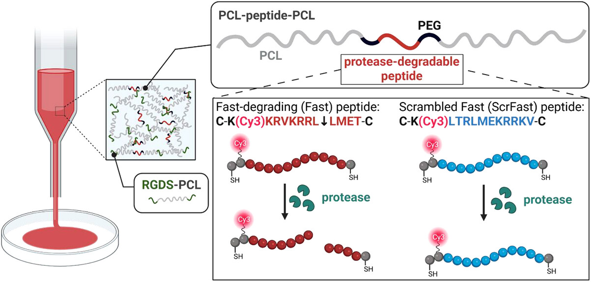
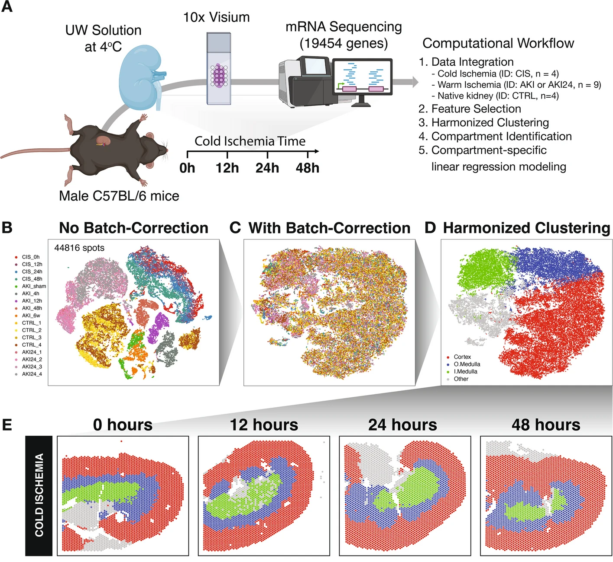

Midfacial bone injuries are difficult to treat due to their complex geometry and close association with sensory organs. Autologous bone grafts remain the standard clinical care which involves harvesting bone from one part of the patient’s body like legs, ribs, skull, etc., to treat the bone injury. This treatment suffers from several limitations including mismatched geometry and donor-site morbidity leading to poor clinical outcomes and patient discomfort.
To address these challenges, we developed and validated a point-of-care (POC) bone tissue engineering strategy to treat large midfacial bone injuries using a porcine model in a pre-clinical setting. We hope this work will eventually translate into the clinic and help advance the field with regards to management of large midfacial bone injuries which do not heal spontaneously.
Briefly, we created 2 cm full thickness, segmental bone injuries in the zygomatic bone of Yucatan minipigs to mimic human-sized midfacial bone injuries observed in a clinical setting. We custom designed bone scaffolds that closely mimicked the contours of the native bone anatomy using the pre-operative CT scans of the animal skulls. Thereafter, we fabricated the bone scaffolds from a blend of FDA-approved, clinical-grade thermoplastic polymer called Polycaprolactone (PCL) and decellularized bone (DCB) using 3D-printing.
The bone injuries were treated with the PCL-DCB bone scaffolds either in standalone fashion or in combination with stromal vascular fraction (SVF) isolated from the animals intra-operatively. Follow up study up to one year demonstrated remarkable new bone regeneration within the injury region and seamless integration of the scaffold with surrounding native bone. Moreover, no bone scaffolds failed during the entire duration of treatment. The findings from this study demonstrated the feasibility and therapeutic efficacy of the point-of-care treatment strategy.
The relevant work can be found at Singh et al, Biomaterials 282, 121392 (2022)
Subsequently, we performed another preclinical study wherein we developed an advanced imaging workflow to assess spatiotemporal bone regeneration pattern within large midfacial bone injuries treated with custom PCL-DCB scaffolds. Conventionally, tissue-engineered bone scaffolds mimic the native bone anatomy of the injury site. It is anticipated that the new bone will regenerate within the injury site using the scaffold geometry as a template. However, ectopic bone growth i.e., bone regeneration in regions extraneous to the injury site especially in the peri-orbital (or midfacial) region can affect physiological function like vision and cause disfigurement. Hence, it is imperative to understand how new bone regenerates around the tissue engineered scaffold.
There are mainly two ways by which bone regenerates namely – osteo-conduction and osteo-induction. In this context, osteoconduction is defined as the process in which the pre-existing native bone flanking the PCL-DCB scaffolds grows into the injury site. In contrast, osteo-induction is the process in which new bone forms from the osteo-progenitor cells within the injury site. CT analysis is routinely used in clinics for longitudinal quantification of new bone regeneration at the bone injury site post treatment. However, a robust technique to assess spatiotemporal bone regeneration pattern seemed to be lacking.
Thus, we designed a CT based workflow to characterize bone regeneration pattern which can be easily incorporated into clinical routine for post-operative evaluation. Briefly, we registered pre-operative and post-operative CT scans of the bone injury site using an inhouse registration protocol based on iterative closest point (ICP) algorithm. Thereafter, we assessed how much of the newly regenerated bone formed within the native anatomical contours of the injury site. We found that regenerated bone forms around the PCL-DCB scaffolds predominantly by the process of osteo-conduction, while very small amounts of bone formed within the scaffold by osteo-induction could be detected by high-resolution microCT scans and hard-tissue histology. We observed ectopic bone growth around PCL-DCB scaffolds, particularly at the dorsal and ventral aspects of the scaffolds. Interestingly, we found an inverse correlation between geometrical mismatch and ectopic bone formation which suggests that introducing deliberate underfill/deficits within the scaffold design might prove beneficial which challenges the conventional scaffold design paradigm wherein scaffold geometry exactly matches the anatomy of the lost tissue. We believe that this work provides valuable insights which need to be taken into consideration for improving the design of tissue-engineered bone scaffolds which not only promotes new bone regeneration but only miniminzes ectopic bone growth especially in the context of facial reconstruction.
The relevant work can be found at Singh et al, Adv. Healthcare Mater. 12, 2301944 (2023)


An ideal tissue-engineered bone scaffold is the one which degrades at a rate similar to that of new bone tissue formation. This timely and proportional degradation of the scaffold ensures that the regenerated bone tissue gets adequate space to grow into the injury site and restores pre-injury anatomy by using the scaffold as an underlying template. Bone scaffolds are often made out of thermoplastic polymers like Polycaprolactone (PCL) which degrade very slowly by the process of hydrolysis which may take years for the scaffold to resorp, while peak bone regeneration happens within the first couple of months after scaffold implantation at injury site. This mismatch in the kinetics of scaffold degradation and bone tissue regeneration can often lead to poor outcomes including departure of the regenerated bone tissue from the native anatomical contour. To address this recurring issue in the field of bone tissue engineering, we envisioned a molecule which can couple the process of bone tissue regeneration and scaffold degradation. To achieve this, we incoporated an enzyme-senstive peptide segment into the aliphatic chain of the PCL molecule which can be cleaved by enzymes secreted by cells within the regenerating tissue environment. We demonstrated cell-mediated degradation of scaffolds fabricated from the enzyme-sensitive PCL-peptide-PCL molecule. One major advantage of this method is that the degradation property of the scaffold can be tuned by incorporating the appropriate peptide sequence within the PCL molecule. Moreover, standalone, freestanding scaffolds that can cater to different clinical contexts involving bone injuries varying in shape and size can be fabricated by the process of solvent casting, electro-spinning, melt-extrusion/3D-printing, etc. We hope that the synergy of smart biomaterials and scaffold design will lead to better bone regenerative outcomes in the future.
The relevant work can be found at Sinad et al, Adv. Healthcare Mater. 15: e04885 (2026)
Kidney transplantation remains the ultimate treatment strategy for patients with end-stage kidney disease. Kidneys obtained from live donors are ideal for transplantation, however, severe organ shortage has led to a major push for use of deceased-donor kidneys (i.e., kidneys obtained from dead donors) in recent times. Quite often the extraction of kidney from the dead donor and the subsequent transplantation into the recipient happen at two different (possibly geographically distant) medical centers. As such there is a time lag between the kidney allograft harvesting and transplantion procedures. Thus, kidney allografts are usually shipped on ice during the transit between the centers to preseve organ viability and minimize any cellular injury. The time spent on ice is usually referred to as cold ischemia time.
Prolonged cold ischemia time is known to induce cold ischemia injury within the tissue of kidney allografts and is associated with poor clinical outcomes. However, there seems to be a lack of mechanistic understanding of the pathophysiology of cold ischemia kidney injury and how it affects kidney allograft survival and function after transplantation. To bridge this knowledge gap, we performed full transcriptome profiling of murine kidney tissue subjected to extended durations of cold ischemia injury (0-48 hours) typically observed in clinical kidney translantation setting. Our thorough molecular charcterization identified spatiotemporal changes in transcriptomic expression and associated molecular pathways accompanying cold ischemia injury progression. Of note, we identified heightened transcriptomic signature of oxidative phosphorylation (OXPHOS) within the oxygen-lean medulla region which is known to prefer glycolysis. This atypical metabolic presentation might be indicative of pathological development deep within the cold ischemic kidney tissue which might go unnoticed by routine clinical biopsies which are superficial and mostly remain confined to the cortex of the kidney. Through this work, we tried to demonstrate how high-throughput omics platform in combination with computational tools can be harnessed to identify molecular markers associated with cold ischemia injury progression. We hope that this exploration will eventually help clinicians and the broader scientific community to decipher the cause of poor prognosis observed in kidney allograft subjected to long durations of cold ischemia time.
The relevant work can be found at Singh et al, Genome Biol. 27, 283 (2026)
